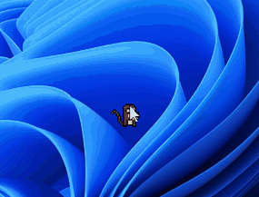
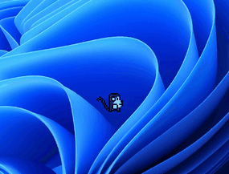
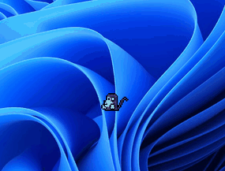
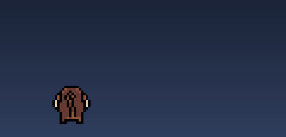
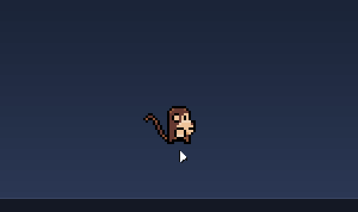

FREE · OPEN SOURCE · 6 MB · NO ACCOUNT
A tiny monkey for your desktop
He follows your cursor, throws bananas, poops, and loves you. Windows & macOS, one 6 MB file, no dependencies, nothing to sign up for.
Signed & notarized by Apple.
He auto-updates himself — install once, he keeps himself young.

WHAT HE DOES
He has a surprisingly full schedule.
When the mouse sits still too long, he gets on with his own life — and none of it is your business.




AND THAT'S NOT ALL
- Steals your cursor and runs off with it. Shake the mouse to break free.
- Revive the dead by grabbing the body and shaking it. The power of love.
- Cleans up his own poops — flings them off-screen, or at your cursor.
- Tickle him: shake the mouse right next to him and he giggles.
- Naps for real — lies down, little Z's float up. Any mouse move startles him awake.
- Speaks English or French, auto-detected, in speech bubbles you can rewrite.
HE HAS MOODS
Four gauges run his whole life.
Energy, boredom, happiness and fear drift with how you treat him, and weight everything he decides to do. Peek at them any time in his tray menu.
- Bored monkey → mischief. You brought this on yourself.
- Scared monkey → keeps his distance and eyes you from the corner.
- Drained monkey → eats a banana, then naps like it's a career.
- Happy monkey → hangs around your cursor and says nice things.
tray menu
HOW HE'S DOING
Energy
Boredom
Happiness
Fear
“just hanging around”
MAKE HIM YOURS
Tweak him until he's insufferable.
Open settings from his tray menu. Drag anything below — this is the real window.
0.5×3×
Live preview
He walks at the speed you set on the Life tab.
slugcaffeinated
Hearts
Naps when you're away
Leaves poops
Climbs screen edges
Turning off poops is allowed. He will find another way to express himself.
Right now he's
INSTALL
Ten seconds and he's yours.
One binary, about 6 MB. No account, no installer wizard, no telemetry, no window — he just lives on the desktop.
MACOS
Click the line to copy
- Signed & notarized by Apple — it opens without a warning.
- Launch Desktop Monkey from Spotlight. He shows up in your menu bar.
WINDOWS
Download monkey.exe~6 MB · Windows 10 & 11
- No installer — double-click and he's alive.
- He appears in the notification area with the same little menu.
He auto-updates himself — install once, he keeps himself young. Source on GitHub →
FAQ
He died!
Grab the body and shake it. The power of love. He comes back a bit jittery.
He's too big.
Tray menu → Open settings → Size. Anywhere from 0.5× to a deeply unreasonable 3×.
Does he speak French?
Oui. He follows your system language, and you can force it in the settings.
How do I get rid of him?
You monster. brew uninstall --cask desktop-monkey, or delete monkey.exe.